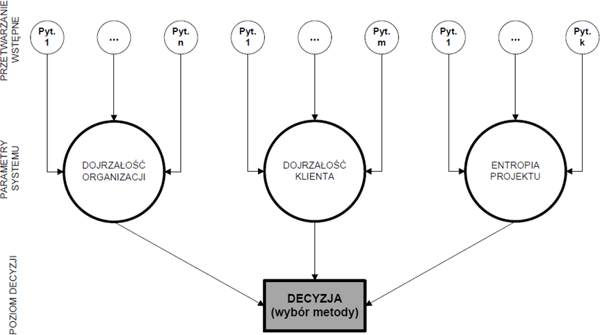
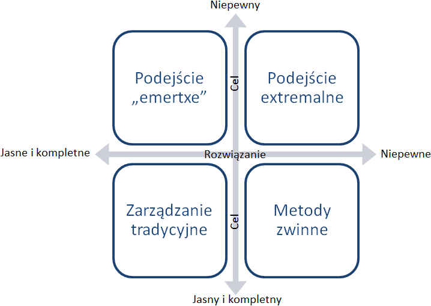

Zanim przedstawione zostaną konkretne metodyki zarządzania projektami warto zastanowić się na podstawie jakich kryteriów menedżerowie decydują się na ich wybór.
Cezary Orłowski oraz Artur Ziółkowski w 2011 roku podczas konferencji Polskiego Towarzystwa Zarządzania Produkcją w Zakopanem zaprezentowali system wsparcia doboru metod zarządzania projektem informatycznym opracowany przez Zakład Zarządzania Technologiami Informatycznymi na Politechnice Gdańskiej. Autorzy systemu jako kluczowe parametry podejmowania decyzji odnośnie wyboru metody zarządzania projektem wyróżnili: [1 s.201]
Dojrzałość organizacji/zespołu autorzy systemu określają korzystając z założeń standradu CMMI (ang. Capability Maturity Model Integration). Na tej podstawie poziom dojrzałości organizacji/zespołu może zostać sklasyfikowana jako:
Dojrzałość klienta według autorów tego podejścia jest to taka kombinacja jego cech i zachowań, która wpływa na przebieg projektu oraz wymaga dobrania odpowiednich metod realizacji tego projektu. [1 s.202] Wśród tych cech wyróżnić można zaangażowanie klienta, jego wiedzę na temat zarządzania projektami w szczególności projektami IT, praktyczne doświadczenie w tego typu projektach oraz świadomość, jakich efektów oczekuje.
Entropia projektu rozumiana jako stopień złożoności projektu [2 s.37] ma istotny wpływ na wybór metodyki zarządzania projektem. Autorzy wyróżnili trzy stopnie entropii projektu: mały – projekty mają jasno ustalony zakres i cel, średni – założenia projektu muszą być kilukrotnie weryfikowane i duży – stopień zmienności projektu jest niepewny, a wymagania nie maja klarownej struktury.
Na te podstawowe kryteria wyboru metodyki zarządzania projektem składają się mniejsze w postaci konkretnych pytań, które mają ułatwić trafne określenie dojrzałości zespołu, klienta i entropii projektu. Proces ten obrazuje rys. 3.1.1. System wsparcia doboru metod zarządzania projektem informatycznym.
Tak skonstruowany system nie pozostaje bez wad: wprowadzony zbiór metodyk zarządzania projektem jest ograniczony, system wymaga każdorazowo odpowiedzi na zestaw tych samych pytań, co może być czasochłonne, a z kolei ich zmniejszenie może negatywnie wpłynąć na jakość wnioskowania.
Rys. 3.1.1 System wsparcia doboru metod zarządzania projektem informatycznym
Alternatywne podejście do decyzji odnośnie metodyki zarządzania projektem prezentuje Robert Wysocki uznając za kluczowe kryteria wyboru jasność i kompletność celu i rozwiązania. Dla tych dwóch kryteriów przedstawia cztery preferowane grupy metod: zarządzanie tradycyjne, metody zwinne, podejście extremalne i „emertxe” – rys. 3.1.2. Macierz wyboru metodyki zarządzania projektem wg. Roberta Wysockiego. Pozostawia on jednak w gestii koordynatora uwzględnienie pozostałych kryteriów i zweryfikowanie w ten sposób trafności obranej drogi zarządzania projektem. Poniżej krótki opis wskazanych grup metod zarządzania projektami i charakterystyczne dla nich kryteria uzupełniające.
Rys. 3.1.2 Macierz wyboru metodyki zarządzania projektem wg. Roberta Wysockiego
Zarządzanie tradycyjne odnosi się do projektów o jasno określonym celu i sposobie jego osiągniecia. Taka sytuacja jest bardzo pożądana, ale obecnie coraz rzadziej spotykana. Przykładem projektów, które podpadają pod tę grupę metod zarządzania są projekty dotyczące infrastruktury, np. zakup i konfiguracja komputerów dla którejś z kolei firmy lub w zakresie niektórych aplikacji internetowych np. tworzenie kolejnej strony wizytówki dla restauracji czy konferencji.
Dodatkowe kryteria, które przemawiają za wyborem tej metody według R. K. Wysockiego to: [3 s.302-303]
Wskazane kryteria są jednak tylko swego rodzaju drogowskazem, a nie dogmatem tradycyjnego zarządzania projektami. Na przykład to, że zespół projektowy jest doświadczony i wykwalfikowany może działać za równo na korzyść zarządzania tradycyjnego, jak i przeciwko niemu. Doświadczenie zrealizowane przez autorów pierwszego przedstawionego podejścia do wyboru metodyki wykazało, że młody, niedojrzały zespół zdecydowanie lepiej odnalzał się w podejściu tradycyjnym niż zwinnym. [1 s.200]
Metody zwinne zwane również lekkimi (ang. agile - zwinny) najlepiej sprawdzają się w przypadku projektów o jasno określonym celu, ale nieznanych czy też niepewnych drogach dojścia do niego. Innymi słowy wiemy, co chcemy osiągnąć, ale nie wiemy jak. Stworzenie kompletnego WBS jest niemożliwe, a bez tego nie można przygotować budżetu, harmonogramu. Nie można korzystając z podejścia tradycyjnego, ale metody zwinne wychodzą temu na przeciw stawiając współpracę z klientem ponad formalne ustalenia, co jest jednym z czterech głównym postulatów Manifestu Zwinnego Tworzenia Oprogramowania opracowanego w 2001 roku. [4] Właściwie kryteria wyboru tego podejścia w celu realizacji projektu informatycznego mogą stanowić lustrzane odbicie kryteriów wymienionych wyżej dla zarządzania tradycujnego, dlatego lepiej skupić się na tym jakiego rodzaju projekty warto realizować tą metodą. Według R.K. Wysockiego są to: [3 s.306]
Pomocne przy decyzji o zastosowaniu metodyk zwinnych mogą sie również okazać poniższe pytania: [5]
Podejście extremalne dotyczy projektów, w których zarówno cel jak i sposób jego osiągnięcia nie są dokładnie sprecyzowane. Są to typowe projekty badawcze. Podejście „emertxe” należy zastosować w przypadku projektów, w których sposób rozwiązania problemu jest znany, ale cel jest niejasny. Pozornie brzmi to nielogicznie, jednak w rzeczywistości coraz częściej zdarzają się projekty, które mają na celu znalezienie zastosowania dla nowej technologii czy produktu.
Szacuje się, że około 20% wszystkich projektów należy realizować w sposób tradycyjny. 70% czyli znacząca większość projektów przypada na projekty, które najlepiej realizować za pomocą metod zwinnych. Pozostałe 10% projektów, to projekty, które należy przeprowadzić przyjmując podejście extremalne lub „emertxe”. [3 s.304]
Mając na uwadze charakter niniejszej pracy oraz przedstawioną wyżej statystykę w dalszej części opisane zostaną wybrane metodyki zwinne.
[1] Orłowski C., Ziółkowski A.: Wsparcie doboru metod zarządzania projektem informatycznym z wykorzystaniem systemu agentowego. Zakopane. Konferencja KZZ. 2011.
[2] Chrapko M.: Scrum. O zwinnym zarządzaniu projektami. Gliwice. Helion. 2012.
[3] Wysocki R.K.: Effective Project Management: Traditional. Agile, Extreme. Indianapolis. 2009. Wiley Publishing Inc.
[4] agilemanifesto.org z dnia 27.06.13
[5] Witański M.: APM lekarstwem na niepowodzenie projektów. Proseed. 5/2013. nr 33. s. 52-54.